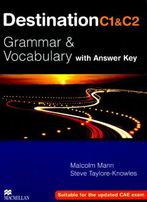

DCC1 va C2 darajadagi o'quvchilar uchun ingliz tili grammatikasi va lug'at boyligi qo'llanmasi.
Ushbu qo'llanma C1 va C2 darajadagi ingliz tili o'quvchilari uchun mo'ljallangan bo'lib, murakkab grammatika qoidalari va boy lug'at boyligini o'z ichiga oladi. Kitob turli xil mashqlar va testlar orqali bilimni mustahkamlashga yordam beradi hamda imtihonlarga tayyorgarlik ko'rish uchun qulay manba hisoblanadi.